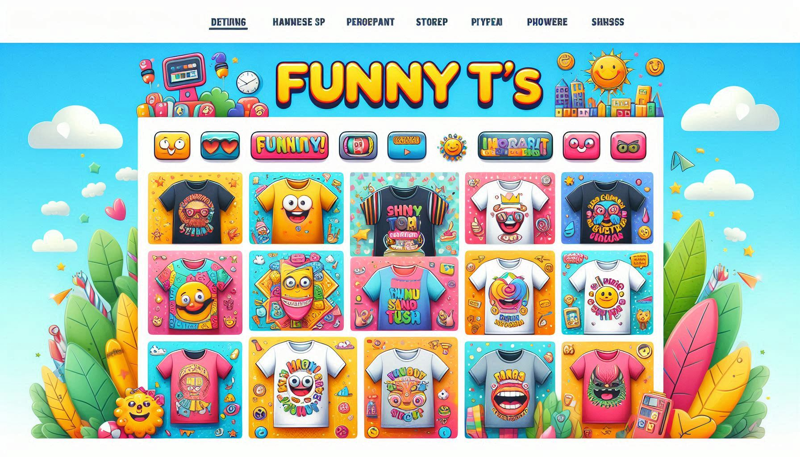
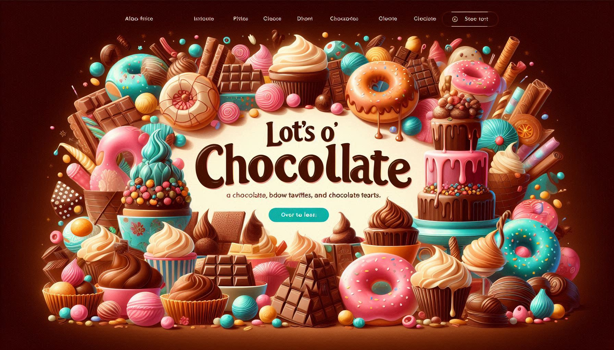
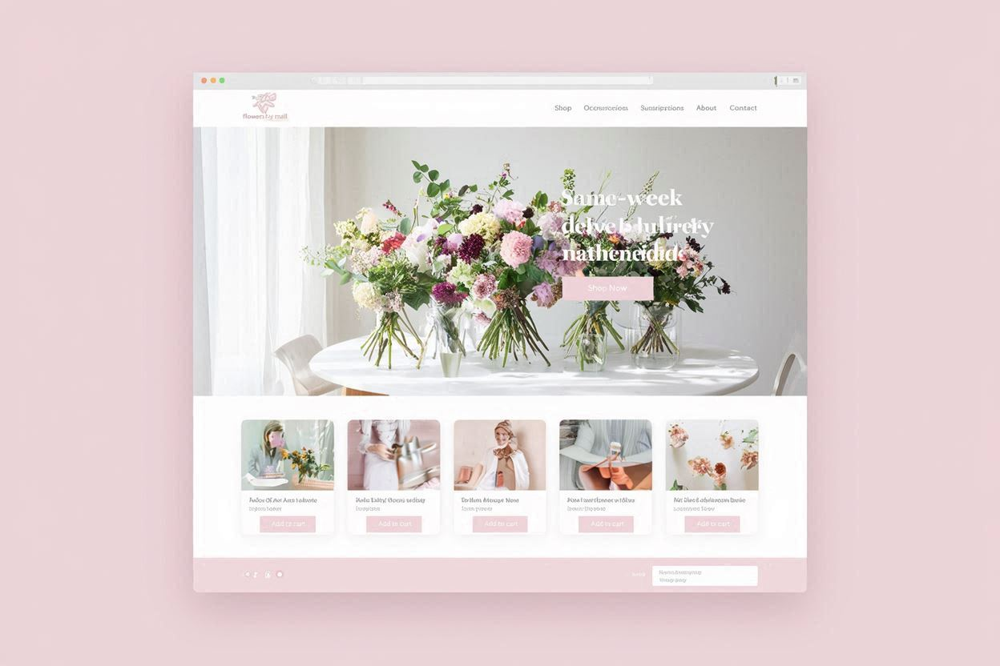

Oak Tree Web Design specializes in creating custom, professional, and responsive websites designed to help small businesses establish a compelling online presence and drive growth. We focus on blending visually appealing design with seamless user experience (UX) and robust search engine optimization (SEO) best practices to ensure your site not only looks great but also performs effectively on all devices. Our mission is to work closely with you, offering personalized service and clear communication, to translate your unique business goals into a powerful digital platform that attracts your target audience and converts visitors into loyal customers.
Projects

Project Spotlight: Funny T's
Funny T's approached Oak Tree Web Design needing an e-commerce platform that was as vibrant and engaging as their unique apparel. The core challenge was to design and build a high-performance, mobile-responsive website capable of showcasing hundreds of quirky designs while providing a seamless, enjoyable shopping experience. Our solution focused on a custom, visually appealing interface that perfectly captured their brand's fun personality using bold colors and clear typography. We ensured intuitive navigation with streamlined categorization and filtering options, making it easy for customers to find the perfect shirt. Built for speed and reliability, the optimized site functions flawlessly across all devices. The result is a powerful, easy-to-manage e-commerce platform that successfully elevated their online presence, leading to increased traffic, higher conversion rates, and a measurable boost in online sales.

Project Spotlight: Lots O' Chocolate
Lots O' Chocolate required a rich, professional e-commerce platform that was as luxurious and enticing as their premium confections. The objective was to design a beautiful, mobile-friendly website that could seamlessly integrate their extensive, detailed product catalog into a high-performance, user-friendly online store. Oak Tree Web Design crafted a custom, visually appealing interface using high-quality imagery and a sophisticated color palette to evoke the brand’s premium quality. We implemented intuitive categorization and filtering systems, making it simple for customers to explore different chocolate varieties and build custom gift boxes. The site was optimized for reliability and speed across all devices, streamlining the complex ordering and shipping processes. The result is a stunning digital storefront that has garnered rave reviews from customers, enhanced the brand’s online presence, and significantly boosted e-commerce sales.

Project Spotlight: Flowers by Mail
Flowers by Mail approached Oak Tree Web Design with a need for a reliable, elegant e-commerce platform capable of handling the logistical complexities of selling perishable goods with specific delivery windows. The objective was to create a beautiful, user-friendly website that streamlined the ordering process and ensured a seamless experience from selection to delivery. We focused on a visually stunning design using high-quality floral photography and a clean, intuitive interface that captured the elegance of the brand. A key component of our solution was developing a sophisticated delivery date selector and route optimization feature tailored to their unique business model. We implemented clear product categorization by occasion and flower type, secure payment gateways, and a simplified, quick checkout procedure to minimize cart abandonment. The new site provides Flowers by Mail with a robust, high-performance platform that has significantly enhanced customer satisfaction, increased operational efficiency, and driven a boost in online sales.
Reviews
-
Melissa Cruz
COO of Funny T's
"Oak Tree Web Design built a fantastic new e-commerce site for Funny T's, and we couldn't be happier with the result. The design team perfectly captured our brand's fun vibe while creating a clean, easy-to-use experience for our customers. Since launching the new responsive site, we've seen a measurable increase in traffic and online sales. Working with them was a breeze; they are professional, quick to respond, and truly experts in web design. Highly recommend!"
-
David Lammers
CEO of Lots O Chocolate
"Oak Tree Web Design crafted a truly mouth-watering and professional website for Lots O' Chocolate! They seamlessly integrated our extensive product catalog into a beautiful, easy-to-navigate e-commerce platform that is both visually appealing and mobile-friendly. The team was a pleasure to work with, responsive to all our detailed requests, and delivered the project on time and within budget. We've received rave reviews from customers about the new online store and are seeing a direct impact on our sales. We highly recommend Oak Tree Web Design for any business looking to elevate its digital presence!"
-
Sarah Jenkins
CEO of Flowers by Mail
"Oak Tree Web Design delivered a stunning, high-performance website for Flowers by Mail that truly captures the elegance of our brand. The team navigated the complexities of our timed-delivery and e-commerce needs with ease, creating a beautiful, user-friendly platform that makes ordering flowers a seamless experience. Their attention to detail, proactive communication, and expertise in responsive design have resulted in a significant boost to our online orders and customer satisfaction. We are thrilled with the final product and enthusiastically recommend Oak Tree Web Design to anyone needing expert web development services."